Contents
COE 347 openfoam3
wallanalysis
cd('/Users/lukewilson/OneDrive/Sp22/coe347/openfoam3/openfoam3')
import Nx2 data
entrywall_p = importdata('Convergence/mach-3-wind-tunnel-with-step-Nx2/postProcessing/singleGraph/4/entryWall_p_T.xy'); entrywall_U = importdata('Convergence/mach-3-wind-tunnel-with-step-Nx2/postProcessing/singleGraph/4/entryWall_U.xy'); stepvertical_p = importdata('Convergence/mach-3-wind-tunnel-with-step-Nx2/postProcessing/singleGraph/4/stepVertical_p_T.xy'); stepvertical_U = importdata('Convergence/mach-3-wind-tunnel-with-step-Nx2/postProcessing/singleGraph/4/stepHorizontal_U.xy'); stephorizontal_p = importdata('Convergence/mach-3-wind-tunnel-with-step-Nx2/postProcessing/singleGraph/4/stepHorizontal_p_T.xy'); stephorizontal_U = importdata('Convergence/mach-3-wind-tunnel-with-step-Nx2/postProcessing/singleGraph/4/stepHorizontal_U.xy'); topwall_p = importdata('Convergence/mach-3-wind-tunnel-with-step-Nx2/postProcessing/singleGraph/4/topWall_p_T.xy'); topwall_U = importdata('Convergence/mach-3-wind-tunnel-with-step-Nx2/postProcessing/singleGraph/4/topWall_U.xy'); figure(1) plot(entrywall_p(:,1),entrywall_p(:,4)) title("Entry Wall Pressure Distribution") xlabel('x') ylabel('p') hold on figure(2) plot(stepvertical_p(:,2),stepvertical_p(:,4)) title("Step Vertical Wall Pressure Distribution") xlabel('y') ylabel('p') hold on figure(3) plot(stephorizontal_p(:,1),stephorizontal_p(:,4)) title("Step Horizontal Wall Pressure Distribution") xlabel('x') ylabel('p') hold on figure(4) plot(topwall_p(:,1),topwall_p(:,4)) title("Top Wall Pressure Distribution") xlabel('x') ylabel('p') hold on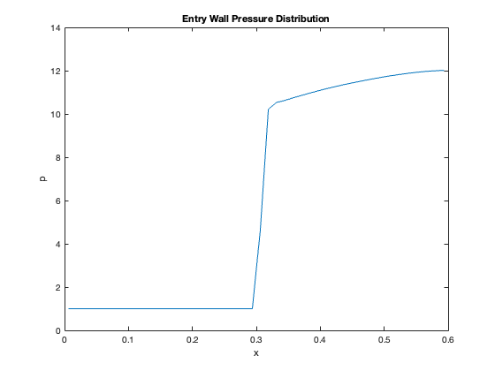 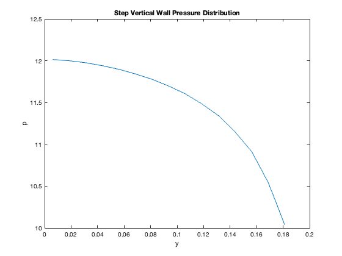 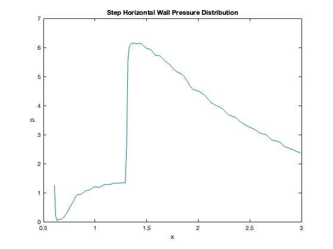 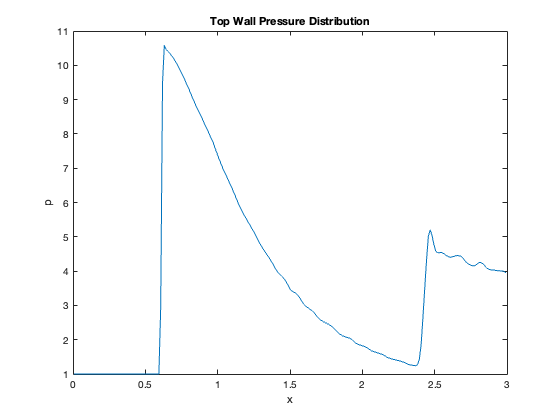
Import Nx4 Data
entrywall_p = importdata('Convergence/mach-3-wind-tunnel-with-step-Nx4/postProcessing/singleGraph/4/entryWall_p_T.xy'); entrywall_U = importdata('Convergence/mach-3-wind-tunnel-with-step-Nx4/postProcessing/singleGraph/4/entryWall_U.xy'); stepvertical_p = importdata('Convergence/mach-3-wind-tunnel-with-step-Nx4/postProcessing/singleGraph/4/stepVertical_p_T.xy'); stepvertical_U = importdata('Convergence/mach-3-wind-tunnel-with-step-Nx4/postProcessing/singleGraph/4/stepHorizontal_U.xy'); stephorizontal_p = importdata('Convergence/mach-3-wind-tunnel-with-step-Nx4/postProcessing/singleGraph/4/stepHorizontal_p_T.xy'); stephorizontal_U = importdata('Convergence/mach-3-wind-tunnel-with-step-Nx4/postProcessing/singleGraph/4/stepHorizontal_U.xy'); topwall_p = importdata('Convergence/mach-3-wind-tunnel-with-step-Nx4/postProcessing/singleGraph/4/topWall_p_T.xy'); topwall_U = importdata('Convergence/mach-3-wind-tunnel-with-step-Nx4/postProcessing/singleGraph/4/topWall_U.xy'); figure(1) plot(entrywall_p(:,1),entrywall_p(:,4)) title("Entry Wall Pressure Distribution") xlabel('x') ylabel('p') figure(2) plot(stepvertical_p(:,2),stepvertical_p(:,4)) title("Step Vertical Wall Pressure Distribution") xlabel('y') ylabel('p') figure(3) plot(stephorizontal_p(:,1),stephorizontal_p(:,4)) title("Step Horizontal Wall Pressure Distribution") xlabel('x') ylabel('p') figure(4) plot(topwall_p(:,1),topwall_p(:,4)) title("Top Wall Pressure Distribution") xlabel('x') ylabel('p')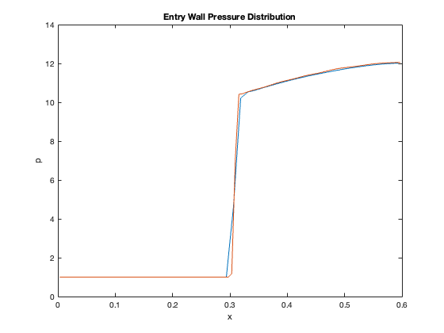 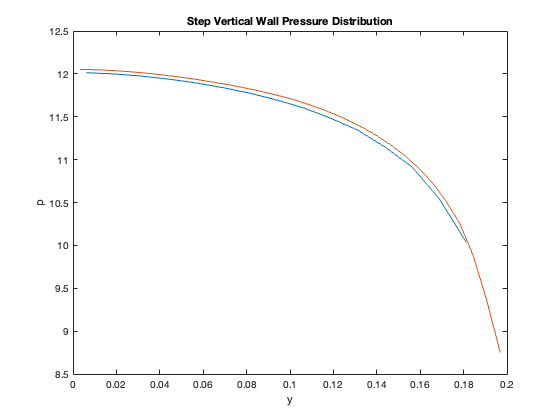 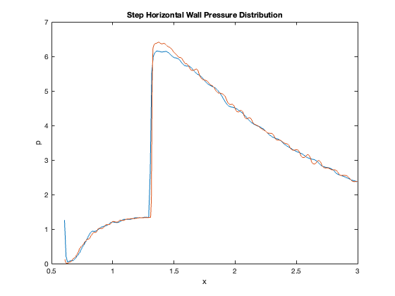 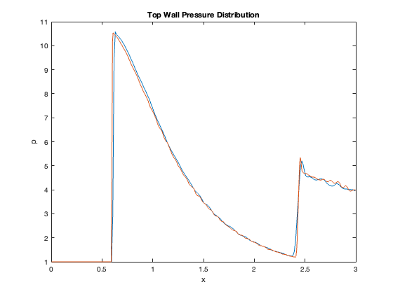
Import Nx8 Data
entrywall_p = importdata('Convergence/mach-3-wind-tunnel-with-step-Nx8_2/postProcessing/singleGraph/4/entryWall_p_T.xy'); entrywall_U = importdata('Convergence/mach-3-wind-tunnel-with-step-Nx8_2/postProcessing/singleGraph/4/entryWall_U.xy'); stepvertical_p = importdata('Convergence/mach-3-wind-tunnel-with-step-Nx8_2/postProcessing/singleGraph/4/stepVertical_p_T.xy'); stepvertical_U = importdata('Convergence/mach-3-wind-tunnel-with-step-Nx8_2/postProcessing/singleGraph/4/stepHorizontal_U.xy'); stephorizontal_p = importdata('Convergence/mach-3-wind-tunnel-with-step-Nx8_2/postProcessing/singleGraph/4/stepHorizontal_p_T.xy'); stephorizontal_U = importdata('Convergence/mach-3-wind-tunnel-with-step-Nx8_2/postProcessing/singleGraph/4/stepHorizontal_U.xy'); topwall_p = importdata('Convergence/mach-3-wind-tunnel-with-step-Nx8_2/postProcessing/singleGraph/4/topWall_p_T.xy'); topwall_U = importdata('Convergence/mach-3-wind-tunnel-with-step-Nx8_2/postProcessing/singleGraph/4/topWall_U.xy'); figure(1) plot(entrywall_p(:,1),entrywall_p(:,4)) title("Entry Wall Pressure Distribution") xlabel('x') ylabel('p') legend('Nx2','Nx4','Nx8') figure(2) plot(stepvertical_p(:,2),stepvertical_p(:,4)) title("Step Vertical Wall Pressure Distribution") xlabel('y') ylabel('p') legend('Nx2','Nx4','Nx8') figure(3) plot(stephorizontal_p(:,1),stephorizontal_p(:,4)) title("Step Horizontal Wall Pressure Distribution") xlabel('x') ylabel('p') legend('Nx2','Nx4','Nx8') figure(4) plot(topwall_p(:,1),topwall_p(:,4)) title("Top Wall Pressure Distribution") xlabel('x') ylabel('p') legend('Nx2','Nx4','Nx8')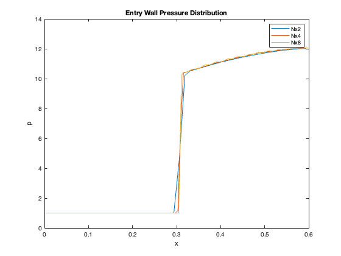 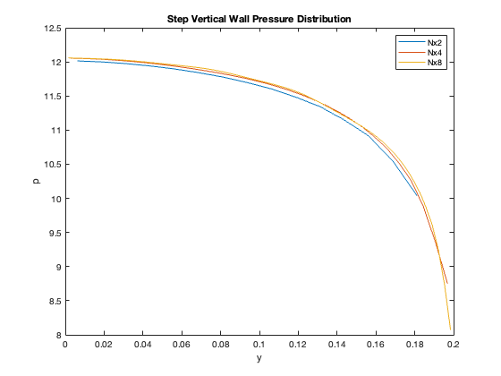 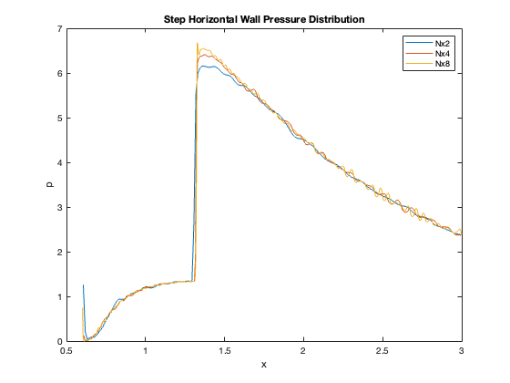 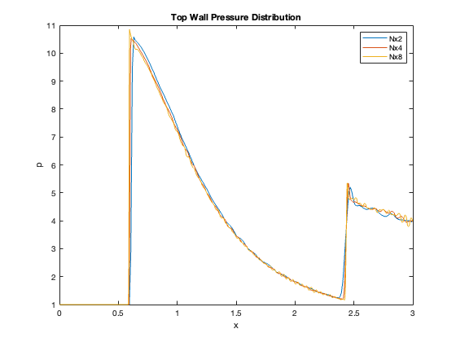